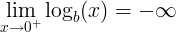

Logarithm rules and properties:
| Rule name | Rule |
|---|---|
Logarithm product rule |
logb(x ∙ y) = logb(x) + logb(y) |
Logarithm quotient rule |
logb(x / y) = logb(x) - logb(y) |
Logarithm power rule |
logb(x y) = y ∙ logb(x) |
Logarithm base switch rule |
logb(c) = 1 / logc(b) |
Logarithm base change rule |
logb(x) = logc(x) / logc(b) |
Derivative of logarithm |
f (x) = logb(x) ⇒ f ' (x) = 1 / ( x ln(b) ) |
Integral of logarithm |
∫ logb(x) dx = x ∙ ( logb(x) - 1 / ln(b) ) + C |
Logarithm of 0 |
logb(0) is undefined |
|  | |
Logarithm of 1 |
logb(1) = 0 |
Logarithm of the base |
logb(b) = 1 |
Logarithm of infinity |
lim logb(x) = ∞, when x→∞ |
The logarithm of a multiplication of x and y is the sum of logarithm of x and logarithm of y.
logb(x ∙ y) = logb(x) + logb(y)
For example:
logb(3 ∙ 7) = logb(3) + logb(7)
The product rule can be used for fast multiplication calculation using addition operation.
The product of x multiplied by y is the inverse logarithm of the sum of logb(x) and logb(y):
x ∙ y = log-1(logb(x) + logb(y))
The logarithm of a division of x and y is the difference of logarithm of x and logarithm of y.
logb(x / y) = logb(x) - logb(y)
For example:
logb(3 / 7) = logb(3) - logb(7)
The quotient rule can be used for fast division calculation using subtraction operation.
The quotient of x divided by y is the inverse logarithm of the subtraction of logb(x) and logb(y):
x / y = log-1(logb(x) - logb(y))
The logarithm of the exponent of x raised to the power of y, is y times the logarithm of x.
logb(x y) = y ∙ logb(x)
For example:
logb(28) = 8 ∙ logb(2)
The power rule can be used for fast exponent calculation using multiplication operation.
The exponent of x raised to the power of y is equal to the inverse logarithm of the multiplication of y and logb(x):
x y = log-1(y ∙ logb(x))
The base b logarithm of c is 1 divided by the base c logarithm of b.
logb(c) = 1 / logc(b)
For example:
log2(8) = 1 / log8(2)
The base b logarithm of x is base c logarithm of x divided by the base c logarithm of b.
logb(x) = logc(x) / logc(b)
The base b logarithm of zero is undefined:
logb(0) is undefined
The limit near 0 is minus infinity:
The base b logarithm of one is zero:
logb(1) = 0
For example:
log2(1) = 0
The base b logarithm of b is one:
logb(b) = 1
For example:
log2(2) = 1
When
f (x) = logb(x)
Then the derivative of f(x):
f ' (x) = 1 / ( x ln(b) )
For example:
When
f (x) = log2(x)
Then the derivative of f(x):
f ' (x) = 1 / ( x ln(2) )
The integral of logarithm of x:
∫ logb(x) dx = x ∙ ( logb(x) - 1 / ln(b) ) + C
For example:
∫ log2(x) dx = x ∙ ( log2(x) - 1 / ln(2) ) + C
log2(x) ≈ n + (x/2n - 1) ,